COMP 2601 Winter 2016
Ex 10 Javascript and Node.js
© L.D. Nel 2016
Revisions -none yet
Description:
[Important Note: This exercise must be completed and demo'ed during the class time. There will not be an opportunity to complete it later -accordingly it is scaled back a bit.]
Programming with javascript -Part II. The purpose of this exercise is to introduce your to node.js based RESTful servers using javascript and make you aware of NPM modules.
The servers we build to implement REST-like API's will be built in javascript (using the node.js environment). Node.js by itself is a very sparse environment and is intended to be used with the eco-system of node modules mainted at the NPM (node package manager) repository.
The server provided with this exercise is built using only node.js native capabilities and does not yet employ any npm modules. Later in the course we will use servers that require modules like: express and sqlite3. In this class exercise we simply make you aware of npm by loading a simple module to help colour server console text (and to illustrate yet another javascript pitfall.)
For this class exercise you will need Node.js installed on your computer.
You need to demonstrate your exercise to the TA or Prof. before you leave the class to get credit for it. Marks: 2 or completion, 1 for partial progress, 0 for no show or no progress. (A mark of 1 can be upgraded to 2 is show us your completed work within one week of this exercise.)
Instructions:
Preliminary:
Recall our server implements the following interface, or API.
HTTP GET
/add?word=Bird
/move?word=Bird&direction=right [also left, up, down]
/pollData
HTTP PUT, POST:
/add
JSON message body: {word:Bird}
/move
JSON message body: {word:Bird,direction:right}
/pollData
JSON message body: {}
All of these API methods respond back to the client with a JSON string representing an array of all the words currently resident in the server and their locations.
Launch the server, browser app and android AVD as you did in the previous exercise. The instructions are repeated here.
Locate the node.js jsonServer.js file in the demo code. Open a terminal window at that location and launch the server by executing node jsonServer.js. The server is now listening for HTTP requests.
Open a browser and visit server at http://localhost:3000/canvasApp.html and it should launch the app displaying some words and a moving word. (Recall localhost refers to the special loopback IP address: 127.0.0.1.)
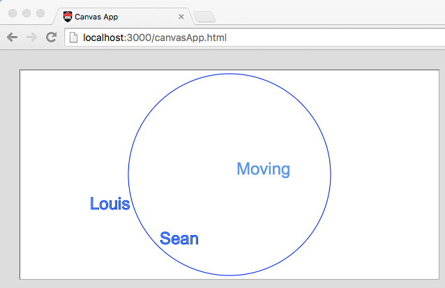
Finally open the android studio project JSON client HTTP GET. Start a virtual device and then launch the app on the virtual device. (Note for this exercise it must be a virtual device. Your real device will not work with localhost.) Also notice in the android MainActivity.java the app visits http://10.0.2.2:3000. "localhost" on the AVD would refer to the AVD itself and we don't want that. The special IP address 10.0.2.2 refers to the localhost of the machine hosting the AVD which is what we want. (If you do want to use your real device you can host your server via the classroom router as we did in the previous exercise.)
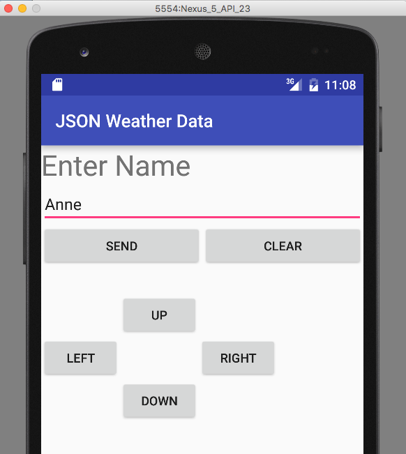
Now that you have these three pieces up and running test the app by adding a few words using the AVD and moving them around and while doing so watch the output on the server console showing you information about requests it receives.
Problem 1 -The NPM colour Module.
Using your android AVD (or a browser, or CURL) send a request to the server to add a word or move a word. The server console should show you some of the request details:
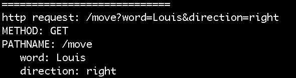
It is going to be important to us when working with REST like request to spot the different HTTP verbs like GET, POST, PUT etc. We will make use of an NPM module that allows us to easily colour the console text.
Open a broswer and visit https://www.npmjs.com. This is the registry site for the eco-system of npm (node package manager) modules published contributed the node.js user community.
Using the search bar search for "colour". (not "color"). You should see the following:
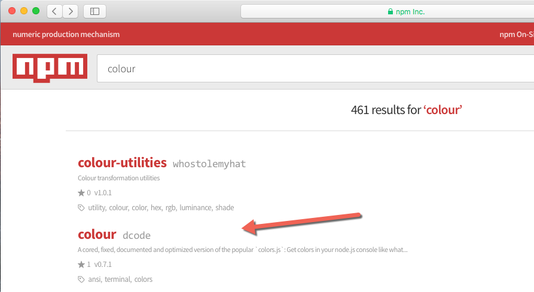
Choose the colour link and notice it provides a module that allows you to colour console output text.
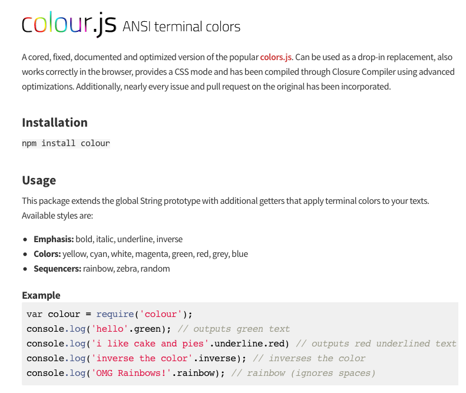
To make use of npm modules they must be installed in a node-modules directory with your code and then required in your .js code file.
Shut down your server (cntl-C) then from the same terminal window execute npm -v to verify that npm is installed (it should have been installed automatically when you installed node.js). You should see the npm version number reported which confirms that npm is installed.
To install the colour module execute npm install colour.
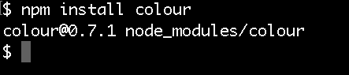
Notice as a result of the install a node-modules directory has been added which will contain all the npm modules you install. This directory should be in the same location as your jsonServer.js file.
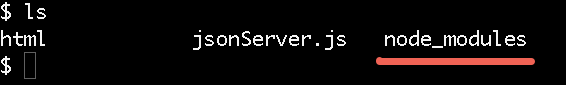
Edit your jsonServer.js file and add the following:
1) At the top of the file add
var colour = require('colour');
2) Find the place in the code where the HTTP METHOD is being logged to the console and print any GET's in green and the POST's in red, and choose other colours for other HTTP verbs you might use.
Restart your server and you should see the http methods, or verbs, shown in colour and easy to spot. (This kind of thing can be very helpful when monitoring and debugging your server code.)
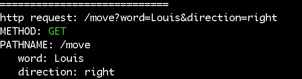
Problem 2 - A Cautionary Experiment.
Shut down your server and with the terminal open on the same directory (containing your server and node_modules directory) execute
node
This will put node into its REPL (read-evalute-print-loop) mode. Here you can execute arbitary javascript statements. (It is a full interactive javascript execution environment).
Try the following: 1+2 and you should see the result: 3.
For fun, now try 0.1 + 0.2. Do you know why the result is not 0.3?
This is a source of many bugs (not just in javascript).
2) Now create a string var str = 'Louis'; and print its characters using both a c-style loop and a for-in loop.
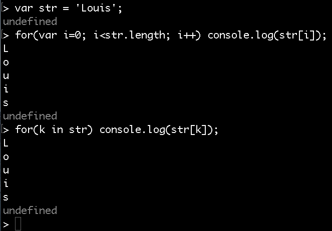
3) now require the colour module and print the string in red.
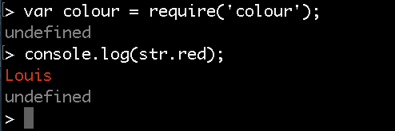
4) Re-run the experiment of printing the characters of the string with a c-style loop and a for-in loop.
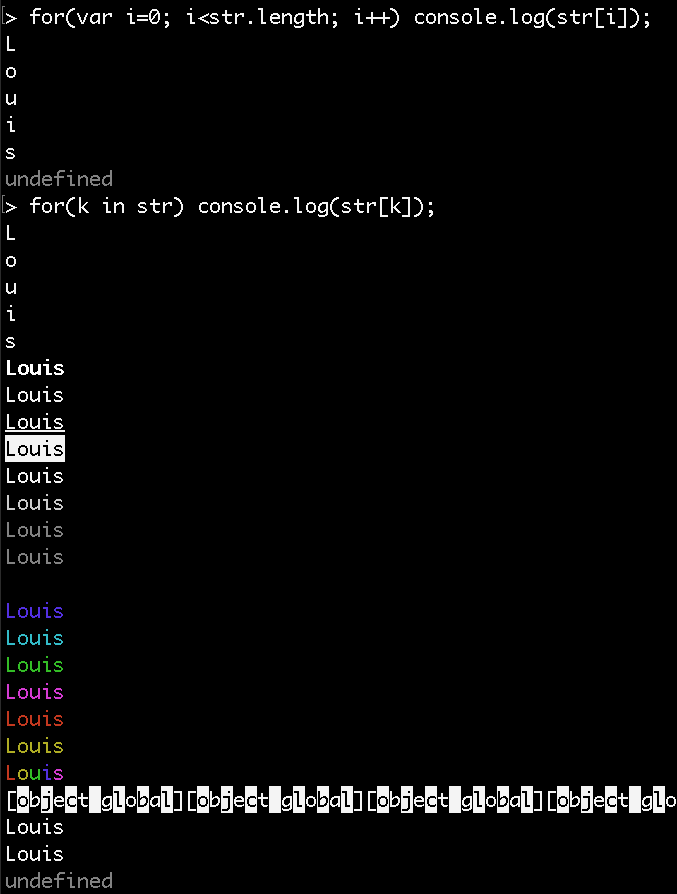
What just happened? Although javascript documentation leads you to believe strings are primitive types (can be checked for equality with == operator) they are infact objects. Installing the npm module colour added properties to the string's inheritance hierarchy. The result is that the for-in loop no longer functions as expected. The same problem exists for javascript arrays.
The lesson from this experiment: You are NEVER SAFE in javascript using for-in loops to loop over the characters of strings or the elements of arrays. This has caused lots for problems for students because it is very unexpected. For-in loops were created to help prevent out of bounds errors when looping over containers so this comes as a real disappointment.
The problem is you can get away with using for-in loops with strings and arrays 98% of the time and then for 2% of the time your code will blow up. Again: NEVER use for-in loops over strings and arrays in javascript.
I have posted on the course website a presentation entitled "Danger Will Robinson: Javascript Pitfalls". It documents some javascript "quirks" that have given students lots of trouble in the past. The two examples from this problem is among them. If you find some of your own please let me know.
Problem 3 -Using POST requests from the Android App
Examine the documentation of the HttpURLConnection class. According to the documentation you should be able to send POST, or PUT, requests instead of GET requests. For a POST message the data is passed in the body of the HTTP message, not the URL portion of the request.
When sending a post message you should also invoke the setChunkedStreamingMode(0) method described to allow data message to be send in chunks. The server is set up to handle data coming in chunks.
Modify your MainActivity java code in the android app so that when the UP, DOWN, LEFT, or RIGHT button is pressed an HTTP POST request is sent to the server (instead of a GET request).
When you have completed this you should be able to see your GET and POST requests show up in the proper colour on the server console output when adding and moving words around.
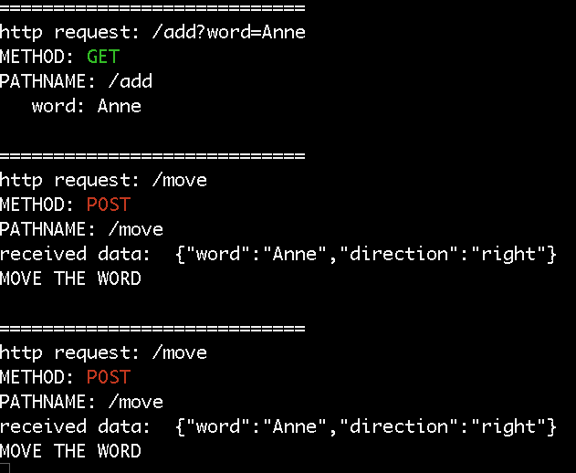
When you have completed these problems demonstrate your code to the TA or Prof. to get credit for the tutorial.